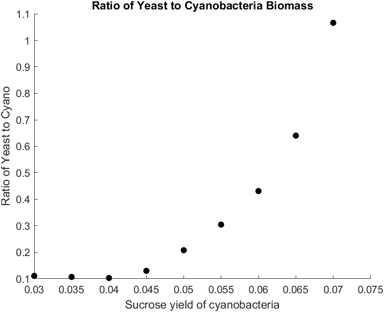
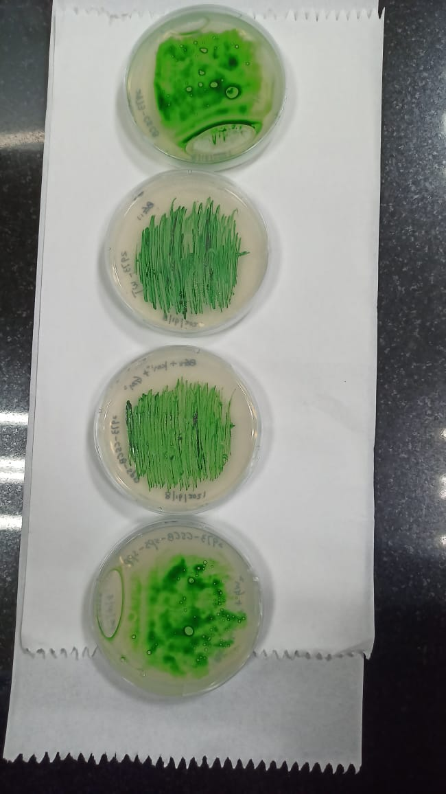
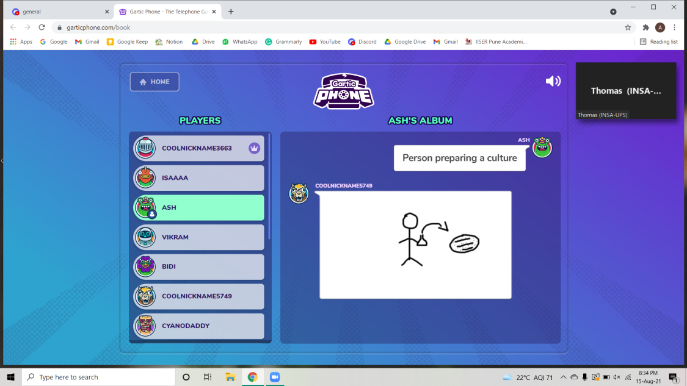

Initial Meetings
After we unveiled our project idea on our social media, Team INSA-UPS from Toulouse reached out to us, having noticed that our project ideas were very similar. Both our teams were working on designing a co-culture of cyanobacteria engineered to secrete sucrose into the extracellular medium, with heterotrophic organisms engineered to consume that sucrose and produce a metabolite of interest, which was E.coli engineered to produce butanol in our case, and yeast engineered to produce a violet scent in theirs.
Our collaboration ultimately resulted in a very fruitful partnership on multiple fronts, including Modeling, Wet Lab and Human Practices.
May 29th
We had our first meeting on 29th May, where we presented our ideas and discussed possible ways of collaborating with each other given the similarities in our projects. We also realized that since both our projects make use of S.elongatus UTEX 2973 as the autotrophic sucrose producing module, but with different heterotrophs engineered to produce different products, we could potentially demonstrate the modularity of the co-culture system, i.e. a variety of heterotrophs engineered to consume sucrose produced by S.elongatus could be swapped in the system to produce a metabolite of choice.
They also informed us that they had spoken to Dr. Himadri Pakrasi to receive the wildtype and engineered sucrose secreting S.elongatus UTEX 2973 strains. We were facing issues acquiring the strains and the team offered to help facilitate the process of requesting the strains from Dr. Pakrasi.
June 25th
The dry lab divisions of both our teams met this time and briefed each other about our modeling plans. At that time, our team was using Flux Balance Analysis (FBA) to model the individual strains, and was planning to perform strain optimization in silico to optimize butanol and sucrose yields. We had not settled on a concrete technique to model the co-culture, and were reading up on dynamic FBA (d-FBA), SteadyCom and Optcom at the time, and had even consulted a few experts on these during our Integrated Human Practices interactions.
The INSA-UPS team mentioned that they would be using a dynamic model using differential equations to model their co-culture. They were particularly interested in our strain optimization modeling and wanted to integrate it into their modeling workflow for the S.elongatus UTEX 2973 strain.
We discussed that it would be a good idea for both our teams to use different techniques to model the co-culture so that we could exchange our code with each other, and reinforce each other’s results using different techniques.
Furthering our Drylab Partnership
A big contributing factor that led to us choosing to work with SteadyCom to model the co-culture was the fact that it would complement the INSA-UPS team’s dynamic model very well. As both our teams had decided to exchange and collaborate on our code, we thought that these two techniques, built on different assumptions, could together give us a wide range of insights and possibly even reinforce some of our results.
After we updated them with our choice of SteadyCom, both our teams decided to hold fortnightly meetings, to update each other on our progress and help with any troubleshooting we might need. We also built a discord server to communicate efficiently and share code and other information regularly.
The INSA-UPS team shared their code for dynamic modeling with us early in the iGEM cycle, which gave us sufficient time to understand their workflow and modify it according to our needs, to model the E. coli component with S. elongatus. They continuously updated us with improvements that they were making to their model and made sure to promptly address any questions we had about the process.
Due to the devastating second wave of the COVID-19 pandemic in India, we were not able to access the lab until mid-August, and the INSA-UPS team was very helpful in providing us with parameters they had obtained from the lab that we needed to run our co-culture simulations.
The dynamic model became a crucial part of our modeling analysis. Even though SteadyCom and the dynamic model have a different set of assumptions about the co-culture, we found that most of the results from both simulations seemed to agree with each other, which only served to increase our confidence and act as a crucial benchmarking for our co-culture modeling analysis.


While setting up our joint community metabolic model for SteadyCom, we realized that due to the lack of standardization and documentation on the topic, this was not as easy a process as we expected. This in fact led us to make a checklist laying out steps to build and troubleshoot a joint community model for SteadyCom, which we also submitted as a contribution that you can read about here.
We put to use what we learned in the process to set up the joint model of S. elongatus and S. cerevisiae that would model the INSA-UPS team’s co-culture. We discovered that due to a different naming convention being used in the yeast model, many of the exchange reactions weren’t being recognized and had to be manually added.
We then ran SteadyCom using this joint model and were able to show that the yeast and cyanobacteria were able to grow together in a co-culture with CO2 as the only carbon source and produce the target chemicals in steady-state conditions.
We also simulated how varying sucrose productivity of cyanobacteria would affect the production of their end products using the SteadyCom model, and confirmed their result that increasing the sucrose production in cyanobacteria would not increase the yield of their target products from the co culture.
We had also planned on running simulations to optimize sucrose and butanol yields in silico in S. elongatus and E. coli respectively, by finding genes that upon either overexpression or deletion, gave a better yield of the target product. We provided the Toulouse team with the code for FSEOF (Flux Scanning based on Enforced Objective Flux) and OptKnock, customized for the incomplete S.elongatus UTEX 2973 model. We also provided them with the results we obtained from our cycles of runs of FSEOF and OptKnock, both of which you can find here. (link cyano page to optimization bookmark). The results we obtained from our strain optimization models would be incredibly helpful to both teams if and when they go beyond the iGEM cycle to work on their projects further.
Wetlab
Team INSA-UPS helped us get in touch with Dr. Michelle Liberton at Prof. Pakrasi’s Lab at the Washington University in St. Louis, who generously agreed to send us their wild-type and sucrose-exporting strains of S. elongatus UTEX 2973.
Acquiring these strains was crucial to the experimental aspect of our project. Due to COVID-19 pandemic, we had insufficient time in the lab to be able to both engineer our cyanobacteria and perform assays. Thus, it was very beneficial to us to have received pre-engineered strains of cyanobacteria to work with and make measurements.
Over the course of our two months in the lab, we exchanged protocols on cryopreserving cyanobacteria, reviving them, and preparing BG-11 growth media with the INSA-UPS team. We also exchanged insights from the results of our respective preliminary growth curve assays and shared tips on how best to efficiently cultivate our cyanobacteria.

Human Practices
We also collaborated with the INSA-UPS team on organizing the Cyanobacteria Symposium along with Team Stony Brook and Hong Kong HKU. The Symposium was a 2-day event with the aim of bringing together iGEM teams working on cyanobacteria along with the experts in the field so that teams could clarify their concerns about working with the chassis and get valuable feedback on their project ideas. The symposium included project presentations to judges, a wiki workshop hosted by our team, fun online games hosted by the INSA-UPS team, and much more.
You can read more about the event on our collaborations page here.


Team IISER Pune India